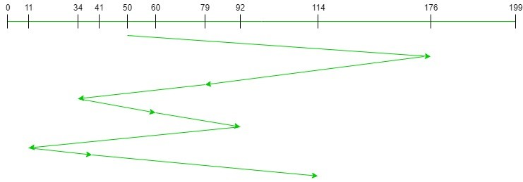

FCFS: First Come First Serve
FCFS (First Come First Serve) is simplest disk scheduling algorithm. Each requests are taken/executed in the
sequence of their arrival in the disk queue. As a result, there is no starvation
in this algorithm. However, it isn't fast compared to other algorithms.
Advantages:
-
There is no starvation in FCFS.
-
FCFS is simple and straight forward approach which means there are no indefinite delays.
-
In FCFS, fair chance given to each request.
Disadvantages:
-
FCFS isn't considered an efficient and optimized approach.
-
FCFS can be time consuming.
Example:
-
Suppose a disk contains 200 tracks (0-199) and the request queue contains track no: 176, 79, 34, 60, 92, 11,
41,
114.
-
The current position of the read/write head is 50. Now we have to calculate the total number of track
movements
of read/write head using FCFS scheduling.
-
As mentioned in the following example, the disk contains 200 tracks, so we take a track line between 0 to 199.
-
The current position of the read/write head is 50. So, we start from 50, then move read/write head in the FCFS
order. When all the requests are addressed, then we calculate a total number of cylinders moved by the head.

-
Total Number of cylinders moved by the head =
(176-50)+(176-79)+(79-34)+(60-34)+(92-60)+(92-11)+(41-11)+(114-41)
= 510
Steps to Implement Algorithm:
-
Let Request array represents an array storing indexes of tracks that have been requested in ascending order of
their time of arrival. 'head' is the position of disk head.
-
Let us one by one take the tracks in default order and calculate the absolute distance of the track from the
head.
-
Increment the total seek count with this distance.
-
Currently serviced track position now becomes the new head position.
-
Go to step 2 until all tracks in request array have not been serviced.
Time Complexity: O ( N ) Auxiliary Space: O ( N )
Simulate